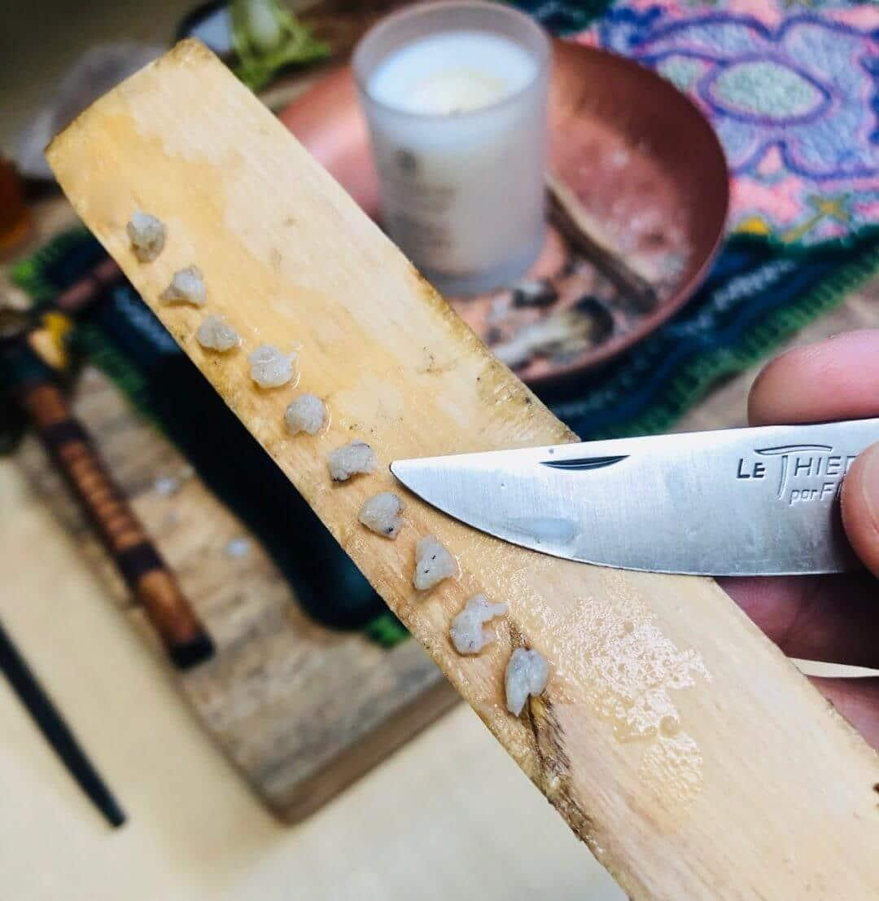

Education · Initiation · Workshops
Q’ero shaman training and incense workshops
Education in Q’ero Ñusta and Paqo traditions, including Karpay initiation, and sacred incense-making workshops in Australia and Peru.

Ñusta and Paqo training
In the Andes, a paqo is a Quechua word for a priest or practitioner who works with nature, the elements and the Apus (sacred mountain spirits). Ñusta is a Quechua word used in the tradition for women who walk this path. This training offers education in Q’ero Ñusta and Paqo traditions.
It includes Karpay, a priesthood initiation. A karpay is an initiation rite: a ceremonial passage that marks a person’s entry into a lineage or a stage of the path. Please enquire about how the training is structured and what it involves.
Who is teaching
Vanessa “Yana Kuntur” Black Condor is a Sydney-based practitioner of Inca medicine and Q’ero-inspired energy work. She has seven years of training and experience in South American ancestral medicines, including six years of study with the Apaza family at the Inca Medicine School in Cusco, Peru. She is a co-founder of the Paco Shaman Association, registered in 2022, and is certified by the Waira Qeros Peruvian Paco Shaman Association. Vanessa has also studied womb-clearing and earth-offering practices with Mama Irma Morales and learned from maestros in Peru and Brazil.
Sacred incense-making workshops
In the workshops, participants explore aromatic plants and create a personal blend for ritual, meditation, prayer or quiet reflection. Burning aromatic plants and resins to mark a ceremony or set a quiet tone is found in many cultures, including across the Andes.

Workshops may be hosted in Australia and Peru. Dates and locations will be shared soon. For event updates, you can also join the WhatsApp group from the homepage.
What to expect and who it suits
Training suits people who feel drawn to learning the Andean path in a structured way, with respect for its roots. The incense workshops are hands-on and open to anyone curious about aromatic plants and ceremony. No prior experience is needed for the workshops.
Vanessa is based in Sydney, and training enquiries are welcome.
Frequently asked questions
What is a Paqo?
Paqo is a Quechua word for an Andean priest or practitioner who works with nature, the elements and the Apus (sacred mountain spirits).
What is Karpay?
Karpay is an initiation rite in the Andean tradition. In this training, it is the priesthood initiation offered as part of Q’ero Ñusta and Paqo education.
Do I need experience to join the training?
Please enquire. Vanessa can talk with you about the training and whether it is a good fit before you commit.
Where are the incense-making workshops held?
Workshops may be hosted in Australia and Peru. Dates and locations will be shared soon.
What do I make in a workshop?
You create a personal incense blend from aromatic plants, for ritual, meditation, prayer or quiet reflection.
How do I enquire?
Use the button on this page to go to the booking page, where you can enquire about training or view workshops and bookings.
These sessions are spiritual and cultural practices, not medical or psychological treatment. If you are in crisis, call 000 or Lifeline on 13 11 14.
Other offerings
- Shamanic healing in Sydney Personal consultation, spiritual counselling and Chumpi realignment
- Cacao ceremonies in Sydney Private, baby shower and corporate events
- Shamanic sound bath in Sydney A 50-minute crystal bowl session
- All offerings See everything on the homepage
Read more
- What is a Q’ero paqo? The Q’ero people, the paqo role and Andean ideas such as Ayni
- What is a karpay? The Andean initiation rite and how it relates to paqo training
Begin with a conversation
Your next step can
be a gentle one.
Choose a service to see its current price, duration and available times. Bookings are handled through Acuity Scheduling.
Enquire about training IN PERSON IN SYDNEY · WORKSHOPS IN AUSTRALIA & PERU